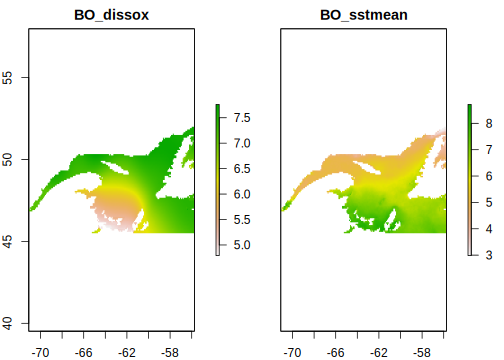
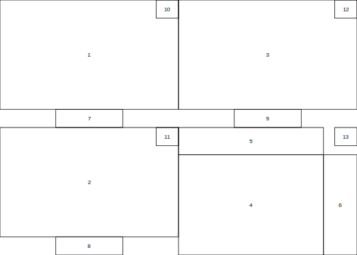
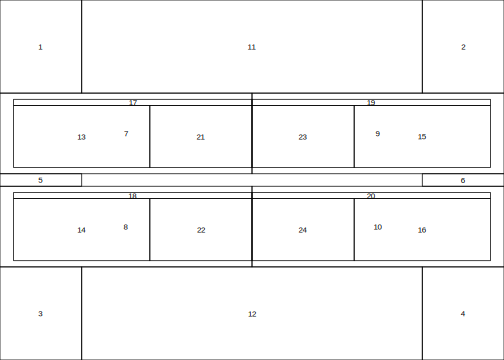

9.5 Examples of complex layouts
The layout() function can be used to produce simple to very complex layouts
for figures. The previous figure was a rather simple example and we will show
two other examples from a scientific article that David is currently wrapping up.
These examples are simply to help visualizing the fact that as long as you can
position elements on a two-dimensional cartesian plane, than you can create
whatever visual you may have in mind with R.
9.5.1 Setting data and parameters
Let’s begin with getting data! The data for the original figure
is inacessible (for now), so we will access marine abiotic data
using the sdmpredictors package. The original figure is however
show at the end of the post, and the data should become openly available
soon.
#R>
#R> Attaching package: 'magrittr'#R> The following object is masked from 'package:raster':
#R>
#R> extract#R>
#R> Attaching package: 'MASS'#R> The following object is masked from 'package:dplyr':
#R>
#R> select#R> The following objects are masked from 'package:raster':
#R>
#R> area, select#R>
#R> Attaching package: 'graphicsutils'#R> The following object is masked from 'package:sp':
#R>
#R> compassRose# Extent of area of interest
latmax <- 52.01312
latmin <- 45.52399
lonmax <- -55.73636
lonmin <- -71.06333
# Focal, local area
xmn <- -67
xmx <- -63
ymn <- 49
ymx <- 51
# Import marine layers
layers <- c("BO_dissox", "BO_sstmean")
envCov <- sdmpredictors::load_layers(layers, datadir = "data", rasterstack = TRUE)
# Crop and build raster stack
envCov <- raster::crop(envCov, raster::extent(lonmin, lonmax, latmin, latmax)) %>%
raster::stack()
# Visualize data
raster::plot(envCov)
# For this graph, we will normalize the values
values(envCov[[1]]) <- values(envCov[[1]]) / max(values(envCov[[1]]), na.rm = TRUE)
values(envCov[[2]]) <- values(envCov[[2]]) / max(values(envCov[[2]]), na.rm = TRUE)We will also need certain elements, such as a custom color palette, for this figure.
# Color palette
cols <- c(
"#f4f4f4", "#C7CBCE", "#96A3A3", "#687677", "#222D3D", "#25364A",
"#C77F20", "#E69831", "#E3AF16", "#E4BE29", "#F2EA8B"
)
rbPal <- colorRampPalette(cols)
# Custom color bar function
colorBar <- function(colRamp, min, max = -min, nticks = 11, ticks = seq(min, max, len = nticks), title = "", ...) {
scale <- (length(colRamp) - 1) / (max - min)
plot(c(min, max), c(0, 1), type = "n", bty = "n", xaxt = "n", xlab = "", yaxt = "n", ylab = "", main = title, ...)
axis(1, ticks, las = 1, ...)
for (i in 1:(length(colRamp) - 1)) {
y <- (i - 1) / scale + min
rect(y, 0, y + 1 / scale, 10, col = colRamp[i], border = NA)
}
}9.5.2 First example
Now we can build a more complicated figure worthy of a scientific article. Let’s begin with a first layout example for a complex four panel figure.
# Layout
mat <- matrix(0, 28, 32)
mat[1:12, 1:16] <- 1
mat[15:26, 1:16] <- 2
mat[1:12, 17:32] <- 3
mat[18:28, 17:29] <- 4
mat[15:17, 17:29] <- 5
mat[18:28, 30:32] <- 6
mat[13:14, 6:11] <- 7
mat[27:28, 6:11] <- 8
mat[13:14, 22:27] <- 9
mat[1:2, 15:16] <- 10
mat[15:16, 15:16] <- 11
mat[1:2, 31:32] <- 12
mat[15:16, 31:32] <- 13
layout(mat)
layout.show(13)
The elements on this complex layout will be drawn sequentially following the order specified in the layout matrix.
layout(mat)
par(mar = c(2, 2, 2, 2))
# Plot 1
image(envCov[[1]], col = rbPal(100), main = "", axes = FALSE)
# Plot 2
image(envCov[[2]], col = rbPal(100), main = "", axes = FALSE)
# Plot 3
image(envCov[[1]] + envCov[[2]], col = rbPal(100), main = "", axes = FALSE)
# Plot 4
# Select only values that are not == 0
notEmpty <- !is.na(values(envCov[[1]]))
# 2D kernel estimation
f1 <- kde2d(
x = values(envCov[[1]])[notEmpty],
y = values(envCov[[2]])[notEmpty],
n = 500, # put 500 for final figure
lims = c(0, 1, 0, 1)
)
par(mar = c(4, 4, 0, 0))
graphicsutils::plot0(c(0, 1))
image(f1, zlim = c(0, max(f1$z)), col = c("#ffffff", rbPal(99)), add = T)
axis(1, seq(0, 1, 0.1), line = -.25, lwd = 0.5)
axis(2, seq(0, 1, 0.1), las = 2, line = -0.5, lwd = 0.5)
mtext("Dissolved oxygen", 1, line = 2.5, font = 1, cex = 0.8)
mtext("Sea surface temperature", 2, line = 2.5, font = 1, cex = 0.8)
# Plot 5
dens <- density(values(envCov[[1]])[notEmpty], from = 0, to = 1)
par(mar = c(0, 4, 0, 0))
graphicsutils::plot0(c(0, 1), c(0, ceiling(max(dens$y))))
polygon(x = c(dens$x, 1), y = c(dens$y, 0), col = cols[5], border = cols[5], lwd = 1)
axis(2, c(0, ceiling(max(dens$y))), lwd = 0.5, line = -0.5, las = 2)
mtext("Density", 2, line = 2.5, font = 1, cex = 0.8)
# Plot 6
par(mar = c(4, 0, 0, 0))
dens <- density(values(envCov[[2]])[notEmpty], from = 0, to = 1)
graphicsutils::plot0(c(0, ceiling(max(dens$y))), c(0, 1))
polygon(x = c(dens$x, 1), y = c(dens$y, 0), col = cols[5], border = cols[5], lwd = 1)
axis(1, c(0, ceiling(max(dens$y))), line = -.25, lwd = 0.5)
mtext("Density", 1, line = 2.5, font = 1, cex = 0.8)
# plot 7
par(mar = c(3, 0, 0, 0))
colorBar(rbPal(100), nticks = 6, min = 0, max = 1, lwd = 0.5)
rect(xleft = 0, ybottom = 0, xright = 1, ytop = 1, lwd = 0.5)
mtext("Dissolved oxygen", 3, line = 0.5, font = 2, cex = 0.8)
# plot 8
par(mar = c(3, 0, 0, 0))
colorBar(rbPal(100), nticks = 6, min = 0, max = 1, lwd = 0.5)
rect(xleft = 0, ybottom = 0, xright = 1, ytop = 1, lwd = 0.5)
mtext("Sea surface temperature", 3, line = 0.5, font = 2, cex = 0.8)
# plot 9
par(mar = c(3, 0, 0, 0))
colorBar(rbPal(100), nticks = 6, min = 0, max = 2, lwd = 0.5)
rect(xleft = 0, ybottom = 0, xright = 2, ytop = 1, lwd = 0.5)
mtext(expression(bold(sum("Oxygen, Temperature"))), 3, line = 0.5, font = 2, cex = 0.8)
# plot 10 - panel A
par(mar = c(0, 0, 0, 0))
plot0(c(0, 1))
text(x = 0.5, y = 0.5, labels = "A", font = 2, cex = 1.35)
# plot 11 - panel B
par(mar = c(0, 0, 0, 0))
plot0(c(0, 1))
text(x = 0.5, y = 0.5, labels = "B", font = 2, cex = 1.35)
# plot 12 - panel C
par(mar = c(0, 0, 0, 0))
plot0(c(0, 1))
text(x = 0.5, y = 0.5, labels = "C", font = 2, cex = 1.35)
# plot 13 - panel D
par(mar = c(0, 0, 0, 0))
plot0(c(0, 1))
text(x = 0.5, y = 0.5, labels = "D", font = 2, cex = 1.35)
While it may seem complicated, all of these plot calls are make up each element of the graph. Before you say I could do this with photoshop!, keep in mind that with this code, I can now change or update the data at will and recreate the same figure effortlessly.
Here is the actual figure that was built using this complex layout, representing hypoxia and demersal fisheries intensity in the St. Lawrence and a comparison of they joint density distribution.

9.5.3 Second example
We can now move on to the second example showing that text can also be readily incorporated into a complex figure layout. Once again, this layout has been used to generate a figure used in a scientific paper and soon to be submitted for publication.
mat <- matrix(0, 17, 10)
# Arrows
mat[1:3, 1:2] <- 1
mat[1:3, 9:10] <- 2
mat[15:17, 1:2] <- 3
mat[15:17, 9:10] <- 4
mat[9, 1:2] <- 5
mat[9, 9:10] <- 6
# Boxes
mat[4:8, 1:5] <- 7
mat[10:14, 1:5] <- 8
mat[4:8, 6:10] <- 9
mat[10:14, 6:10] <- 10
# Plots
mat[1:3, 3:8] <- 11
mat[15:17, 3:8] <- 12
mat[6:7, 2:3] <- 13
mat[12:13, 2:3] <- 14
mat[6:7, 8:9] <- 15
mat[12:13, 8:9] <- 16
# Text
mat[5, 2:5] <- 17
mat[11, 2:5] <- 18
mat[5, 6:9] <- 19
mat[11, 6:9] <- 20
mat[6:7, 4:5] <- 21
mat[12:13, 4:5] <- 22
mat[6:7, 6:7] <- 23
mat[12:13, 6:7] <- 24
layout(mat,
heights = c(1, 1, 1, .2, .2, 1, 1, .2, .4, .2, .2, 1, 1, .2, 1, 1, 1),
widths = c(.2, 1, 1, 1, .5, .5, 1, 1, 1, .2)
)
layout.show(24)
layout(mat,
heights = c(1, 1, 1, .2, .2, 1, 1, .2, .4, .2, .2, 1, 1, .2, 1, 1, 1),
widths = c(.2, 1, 1, 1, .5, .5, 1, 1, 1, .2)
)
# 1
par(mar = c(0, 0, 0, 0))
plot0(c(0, 1))
lines(x = c(.5, 1), y = c(.5, .5))
lines(x = c(.5, .5), y = c(0, .5))
polygon(x = c(.5, .47, .53, .5), y = c(0, .03, .03, 0), col = "black")
text(x = 1, y = .53, labels = "Local management", cex = .75, font = 1, adj = c(1, 0))
# 2
par(mar = c(0, 0, 0, 0))
plot0(c(0, 1))
lines(x = c(0, .5), y = c(.5, .5))
lines(x = c(.5, .5), y = c(0, .5))
polygon(x = c(.5, .47, .53, .5), y = c(0, .03, .03, 0), col = "black")
text(x = 0, y = .53, labels = "Regional management", cex = .75, font = 1, adj = c(0, 0))
# 3
par(mar = c(0, 0, 0, 0))
plot0(c(0, 1))
lines(x = c(.5, 1), y = c(.5, .5))
lines(x = c(.5, .5), y = c(1, .5))
polygon(x = c(1, .93, .93, 1), y = c(.5, .51, .49, .5), col = "black")
# 4
par(mar = c(0, 0, 0, 0))
plot0(c(0, 1))
lines(x = c(0, .5), y = c(.5, .5))
lines(x = c(.5, .5), y = c(1, .5))
polygon(x = c(0, .07, .07, 0), y = c(.5, .51, .49, .5), col = "black")
# 5, 6
for (i in 1:2) {
par(mar = c(0, 0, 0, 0))
plot0(c(0, 1))
lines(x = c(.5, .5), y = c(0, 1))
polygon(x = c(.5, .47, .53, .5), y = c(0, .18, .18, 0), col = "black")
}
# 7, 8, 9, 10
for (i in 1:4) {
par(mar = c(0, 0, 0, 0))
plot0(c(0, 1))
rect(0, 0, 1, 1, border = "black")
}
# 11
for (i in 1:2) {
par(mar = c(1, 1, 1, 1))
image(envCov[[1]], col = rbPal(100), main = "", axes = FALSE)
rect(xmn, ymn, xmx, ymx, lwd = 1, border = "#00000099")
}
# 12
par(mar = c(1, 1, 1, 1))
image(envCov[[1]] + envCov[[2]], col = rbPal(100), main = "", axes = FALSE)
rect(xmn, ymn, xmx, ymx, lwd = 1, border = "#00000099")
# 13, 14
for (i in 1:2) {
par(mar = c(1.25, 1.25, 1.25, 1.25))
plot0(x = c(xmn, xmx), y = c(ymn, ymx))
image(envCov[[1]], col = rbPal(100), main = "", axes = FALSE, add = TRUE)
rect(xmn, ymn, xmx, ymx, lwd = 1, border = "#00000099")
}
# 15, 16
for (i in 1:2) {
par(mar = c(1, 1, 1, 1))
image(envCov[[2]], col = rbPal(100), main = "", axes = FALSE)
}
# 17 Title 1
par(mar = c(0, 0, 0, 0))
plot0(c(0, 1))
text(x = 0, y = 1, labels = "Title1 - Year1", cex = 1, font = 2, adj = c(0, 1))
# 18 Title 2
par(mar = c(0, 0, 0, 0))
plot0(c(0, 1))
text(x = 0, y = 1, labels = "Title1 - Year2", cex = 1, font = 2, adj = c(0, 1))
# 19 Title 3
par(mar = c(0, 0, 0, 0))
plot0(c(0, 1))
text(x = 1, y = 1, labels = "Title2 - Year1", cex = 1, font = 2, adj = c(1, 1))
# 20 Title 4
par(mar = c(0, 0, 0, 0))
plot0(c(0, 1))
text(x = 1, y = 1, labels = "Title2 - Year2", cex = 1, font = 2, adj = c(1, 1))
# 21, 22, 23, 24
for (i in 1:2) {
par(mar = c(0.1, 0.1, 0.1, 0.1))
plot0(x = c(0, 1))
text(x = 0, y = .95, "Jurisdiction:", cex = 0.75, adj = c(0, 1), font = 2)
text(x = .05, y = .85, "\u2022 Municipal", cex = 0.75, adj = c(0, 1))
text(x = 0, y = .7, "Spatial distribution:", cex = 0.75, adj = c(0, 1), font = 2)
text(x = .05, y = .6, "\u2022 Local", cex = 0.75, adj = c(0, 1))
text(x = 0, y = .45, "Data collection protocols:", cex = 0.75, adj = c(0, 1), font = 2)
text(x = .05, y = .35, "\u2022 Non-standardized", cex = 0.75, adj = c(0, 1))
text(x = 0, y = .2, "Data availability:", cex = 0.75, adj = c(0, 1), font = 2)
text(x = .05, y = .1, "\u2022 Fragmented", cex = 0.75, adj = c(0, 1))
}
# 23, 24
for (i in 1:2) {
par(mar = c(0.1, 1, 0.1, 0.1))
plot0(x = c(0, 1))
text(x = 0.05, y = .95, "Jurisdiction:", cex = 0.75, adj = c(0, 1), font = 2)
text(x = 0.1, y = .85, "\u2022 Federal", cex = 0.75, adj = c(0, 1))
text(x = 0.05, y = .70, "Spatial distribution:", cex = 0.75, adj = c(0, 1), font = 2)
text(x = 0.1, y = .60, "\u2022 Regional", cex = 0.75, adj = c(0, 1))
text(x = 0.05, y = .45, "Data collection protocols:", cex = 0.75, adj = c(0, 1), font = 2)
text(x = 0.1, y = .35, "\u2022 Standardized", cex = 0.75, adj = c(0, 1))
text(x = 0.05, y = .2, "Data availability:", cex = 0.75, adj = c(0, 1), font = 2)
text(x = 0.1, y = .1, "\u2022 Regional", cex = 0.75, adj = c(0, 1))
}
And here is the actual figure!